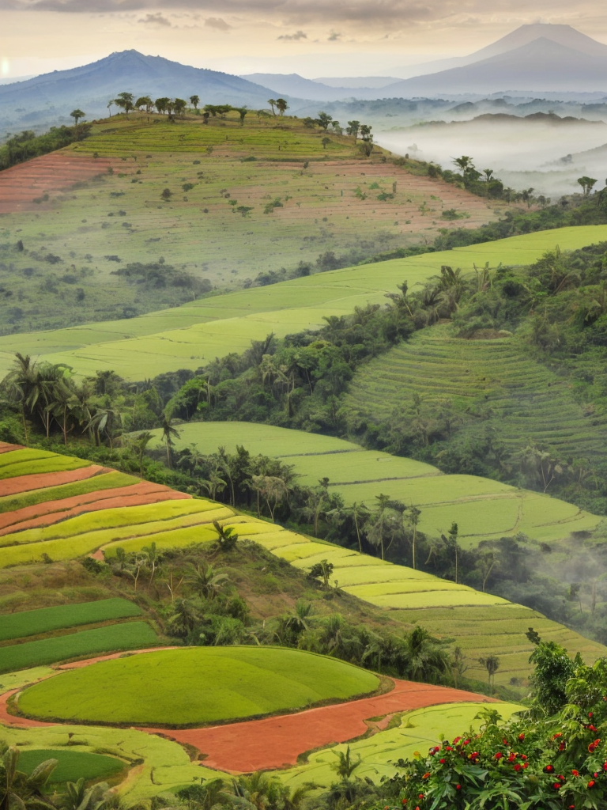

Geography & Environment
Discover the unique geographical features that make Yirga Cheffe exceptional - from volcanic soils at 1,700-2,200m elevation to the perfect microclimate that creates world-renowned coffee.
High Altitude
Volcanic Soil
Forest Coverage
Explore Geography